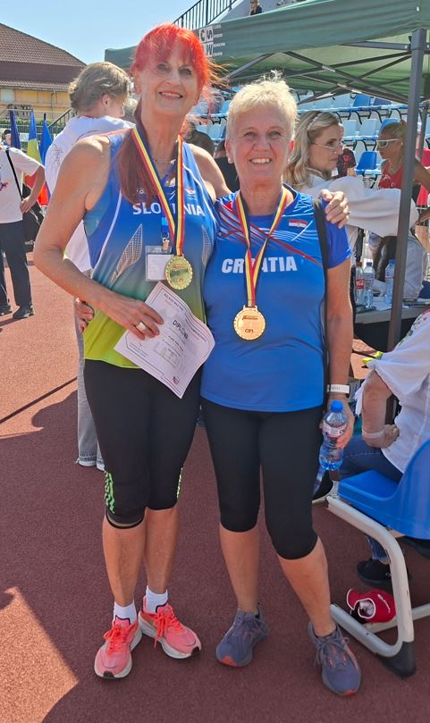

| Dan | Glavni poudarek | Vaje (serije × ponovitve / razdalja / čas) |
|---|---|---|
| Ponedeljek | Moč + ogrevanje za ovire |
Ogrevanje - 10' lahkoten tek + mobilnost kolkov, ramen, gležnjev - Dinamične vaje za ovire (nizek položaj, koraki preko ovir) 3×20 m Moč – celotno telo - Počep z utežjo 3×8 - Mrtvi dvig z manjšo obremenitvijo 3×6 - Potisk s prsi z ročkami 3×10 - Veslanje z elastiko 3×12 Jedro - Plank 3×30 s - Bočni plank 2×20 s na stran |
| Torek | Tek 80 m + pliometrija |
Ogrevanje - 8' tek + gimnastične vaje (skip, poskoki) 4×40 m Pliometrija - Poskoki na mestu 3×15 - Skoki z obema nogama naprej 3×8 - Skoki na nizko stopničko 3×10 Tek 80 m - 5×60–80 m progresivno, pavza 2' med ponovitvami |
| Sreda | Aktivni počitek + razgibavanje |
POČITEK / REGENERACIJA - 20–30' hoja ali zelo lahek tek - Raztezanje celotnega telesa 10–15' - Vaje za dihanje in sprostitev 5–10' |
| Četrtek | Skok v višino + jedro |
Ogrevanje - 10' tek + koordinacijske vaje (lestev, kratki poskoki) 4×20 m Skok v višino – tehnika - Pristopni koraki brez skoka 4×5 ponovitev - Skoki z nizke višine 6–8 skokov, pavza 1–2' Jedro - Dvig medenice v leži 3×12 - Rotacije trupa sede 3×15 |
| Petek | Met krogle + moč zgornjega dela |
Ogrevanje - 8' tek + kroženje ramen, komolcev, zapestij Met krogle – tehnika - Met z mesta 6×1 - Met z enostavnim zaletom 6×1, pavza 1' Moč zgornjega dela - Potisk nad glavo z ročkami 3×8 - Veslanje v predklonu 3×10 - Vaje za rotatorno manšeto 3×12 |
| Sobota | Daljši tek + psihična priprava |
Tek - 20–30' zmeren tek (kontrola dihanja) Psihična priprava - Vizualizacija posameznih disciplin 10' - Kratek zapis ciljev za teden 5' - Tehnike sproščanja (dihanje 4–6, progresivna relaksacija) 10' |
| Nedelja | Počitek |
POLNI POČITEK - Le lahke raztezne vaje po potrebi - Brez strukturiranega treninga |